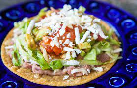

Crispy Ground Turkey Tostadas

Description
These fresh, delicious crispy ground turkey tostadas are made with lots of taco spices, sassy poblano, and tasty pickled red onions.
Ingredients
- 1 red onion, halved and thinly sliced
- ¼ cup Mexican crema
- ¼ cup water
Steps
- Preheat the oven to 375 degrees F (190 degrees C).
- Place red onion slices and crema in separate small bowls. Zest limes into another small bowl. Halve limes and squeeze juice into a fourth small bowl.
- Stir 1 teaspoon lime juice into the bowl of crema. Add the remaining lime juice to the bowl with the red onions; stir in 1/4 teaspoon salt and let marinate at room temperature until pickled, at least 20 minutes.